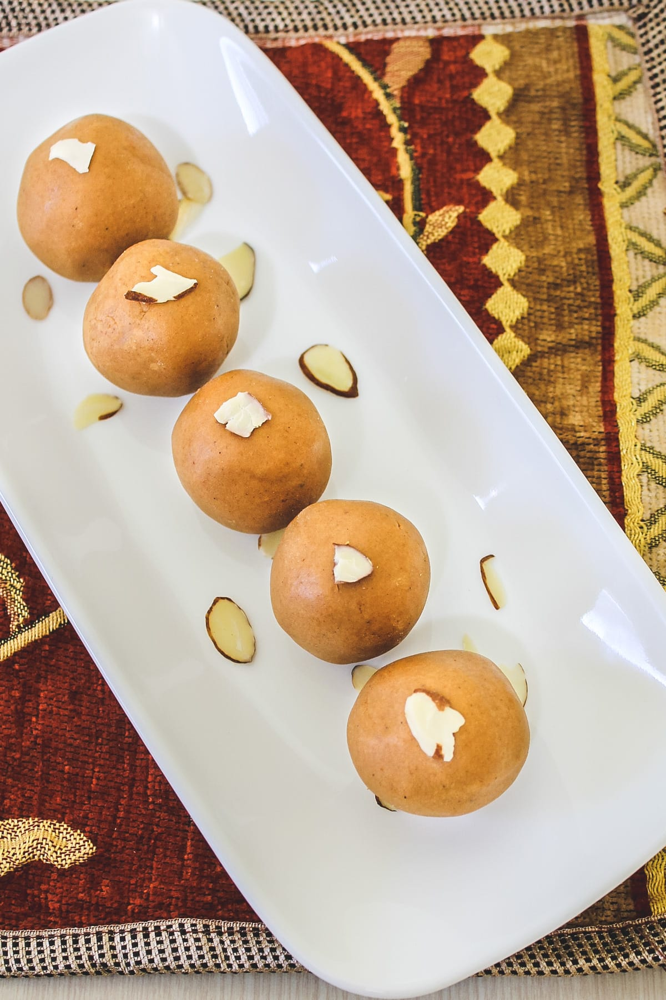
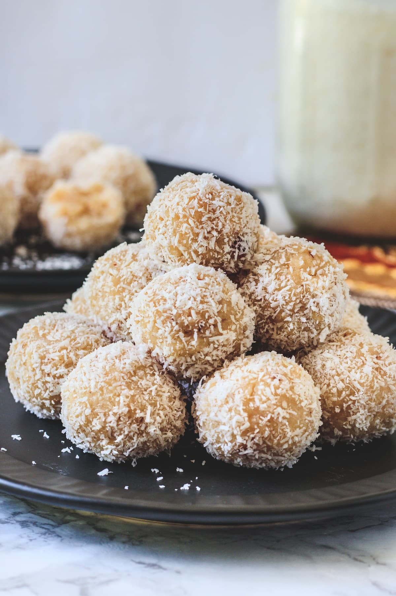
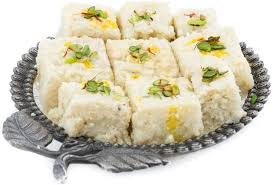
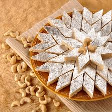

Besan Ladoo

Ingredients
- ⅓ cup Ghee (clarified butter)
- 1 cup Besan (gram flour)
- ½ cup Powdered sugar (Confectioner’s sugar or icing sugar) (tagar or boora)
- ⅛ teaspoon Green cardamom seeds powder⅓ cup Ghee (clarified butter)
- 1 cup Besan (gram flour)
- ½ cup Powdered sugar (Confectioner’s sugar or icing sugar) (tagar or boora)
- ⅛ teaspoon Green cardamom seeds powder
Method
- Heat the ghee or clarified butter in a pan on LOW heat. Once hot add besan and mix.
- Roast the besan on low flame with stirring continuously. In the beginning, it will be a little lumpy.
Keep on stirring and cooking.
- As it gets roasted, it starts to loosen up. Continue cooking, it will not be lumpy anymore. You will
feel little light while stirring and then it starts to change color (golden), you will have a nutty
aroma of cooked besan and will be paste-like and shiny – meaning ghee starts oozing out. It took me
about 20 minutes.
- Remove it to a plate. Let it cool to touch or let it get warm.
- Once the mixture becomes warm, add powdered sugar and cardamom powder. Start mixing with your
fingertips. It will come together like a loose dough
- Shape into the ladoo and place on the plate. As the mixture is loose and warm, besan ladoo will not hold
its round shape and will become flat. No worries. After some time it cools down (about 15 minutes
later).Then again shape into the round ladoo. Now it will hold its round shape. But be sure, don’t
wait too long to cool down. Otherwise, it will get firm.
- Garnish them with chopped nuts or charoli.
Coconut Ladoo

Ingredients
- 2 ½ cups Coconut (frozen or fresh), grated
- 1 can (14 oz) Sweetened condensed milk
- ¼ teaspoon Green cardamom seeds powder
- 2 tablespoons Almonds finely chopped
- 2 tablespoons Cashew nuts finely chopped
- 4-5 tablespoons Desiccated coconut
Method
- Take coconut in a pan on medium heat. Roast for 2-3 minutes or till the moisture is gone. No need to
brown them, I have cooked coconut first because it was frozen. You can skip roasting them if using
freshly grated.
- Then add condensed milk, Mix and let it simmer and cook. Do stir occasionally in the beginning. Then
stir continuously as it starts to thicken more.
- Cook till it is thick and no more moisture left (meaning you don’t see any bubbles from the sides). It
took me around 10 minutes. Turn off the stove.
- Add cardamom powder, almonds, cashews, and mix.
- Remove it to a bowl and let it cool down to touch.
- Grease your palm with ghee, take a small portion of the cooled mixture and start shaping into a ball.
(see the video to learn how to shape). Make a tight, smooth ball.
- Then roll the ladoo into dry coconut and place it on the plate.
- Repeat the same for rest.
Kalakand Recipe

Ingredients
- ⅔ cup Paneer Crumbled and tightly packed (if you want to make fresh paneer, see the notes)
- 1 ½ cups Milk
- ¼ cup Sugar
- ⅛ teaspoon Green cardamom seeds powder
- 2 tablespoons Pistachios chopped for garnishing
Method
- Take milk in a wide mouth pan and bring it to a boil and simmer for 5-6 minutes or till it thickens. Do
stir to make sure that it is not sticking to the pan.
- Side-by-side also crumble the paneer and keep it ready.
- Now add sugar, mix and simmer for another 2-3 minutes.
- Now add crumbled paneer and mix. Cook with stirring constantly till all the moisture is evaporated and
no more bubbly.
- How do you know it is ready? you will notice the mixture is thick but bubbles are forming around the
edges. Meaning it is not yet ready, continue cooking till no more bubbles are forming.
- Turn off the stove, add cardamom powder and mix.
- Grease the plate or container with ghee. In that pour the mixture and spread out evenly. Sprinkle the
chopped pistachios on top. Using hands, lightly press it so pistachios will stick to the kalakand.
- Let it cool down completely and let it set. Then using a sharp knife make square pieces. Remove the
pieces gently and serve.
Kaju Katli

Ingredients
- 260 grams or 2 cups Cashew nuts
- 150 grams or ¾ cup White granulated sugar
- ½ cup Water
- Edible silver leaf (Varakh) as needed optional
Method
- Making Cashew Powder: First, remove the required amount of cashews from the fridge and let them come to
room temperature. It may take 1-2 hours. This is an important step and you cannot skip it.
- Take that into a food processor and make powder by using the pulse button. Do not over-grind otherwise,
it starts to release the oil and becomes wet, pasty. We need dry powder here.
- Cooking The Mixture: Take sugar and water in a heavy bottom pan on medium-low heat. Let it just
come to a boil (no need to simmer).
- As soon as it starts boiling add cashew powder, mix it and cook with stirring constantly.
- As it gets cooked, it starts to get thick and leaves the sides of the pan. Do not scrap the thin layer
that stuck to the pan as it has become chewy now.
- Keep cooking until it comes together like a dough. Depending on the gas heat and size/shape of the
pan,
it may take around 8-10 minutes. CHECK: take a small portion, blow it so it is touchable, make a small
ball and If it is sticking to the finger it needs more cooking. If not sticking then it is ready.
- Remove it to a greased plate and let it cool to touch. It should be warm (not cooled completely).
- Kneading, Rolling & Cutting: Once it is cool to handle, grease your hand with ghee and knead it
two-three times, make a smooth dough. DO NOT over-knead it.
- Now take a big piece of parchment paper. Put the dough ball on it and using your hand start patting and
make a thick round patty. So now it will be easier to roll. Cover the dough with another piece of
parchment paper and start rolling. The thickness should be ¼ inch to ⅓ inch. Do not roll it too
thin. The circle was approx. 10-12 inches in diameter.
- IMPORTANT NOTE: do the kneading and rolling job while the dough is still warm. If it gets cool, it will
start to set and becomes hard to roll.
using a knife cut into a diamond shape. Now let it cool completely and set. It may take around 5-10
minutes.
- Now apply the silver leaf on top. This is optional but it looks good and just like the store-bought
kind. Working with varak is very tricky, you have to be very careful and do not touch it with your
hand.
Rasmalai

Ingredients
- 14-15 pieces Rasgulla (Homemade or store-bought)
- 6 cups Milk
- ½ cup Sugar
- few strands Saffron
- 2 teaspoons Rose water
- 2 tablespoons Almonds Sliced, for serving
Method
- Take milk into a heavy bottom pan and bring it to a simmer on medium heat.
- Meantime take rasgullas, lightly squeeze to remove the syrup. Do not squeeze too hard that it crumbles
or break. Prep all them similarly and keep it aside.
- Now back to the simmering milk. Keep stirring and scraping the sides of the pan. Simmer till its reaches
its half quantity. It may take around 25-30 minutes.
- Now add sugar and saffron, again simmer for another 5 minutes.
- Now add squeezed ragulla. And let it simmer for 2 minutes only and turn off the stove. In the end, add
rose water and mix.
- Now let it cool to room temperature and then chill rasmalai into the refrigerator. At the time of
serving garnish with sliced almonds.